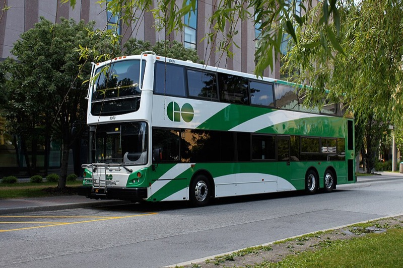
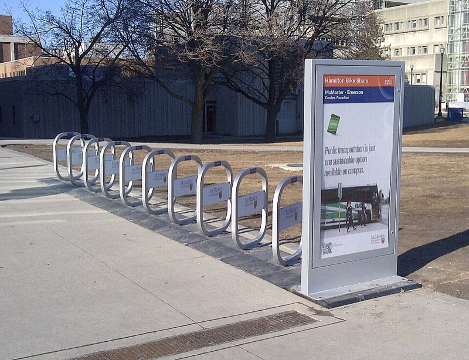
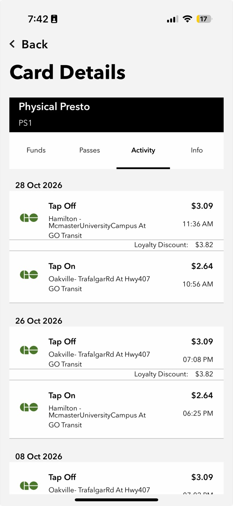
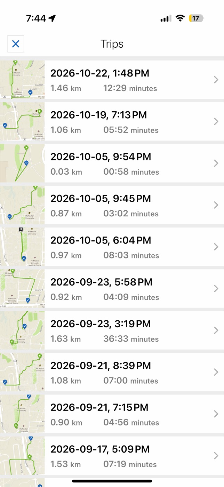
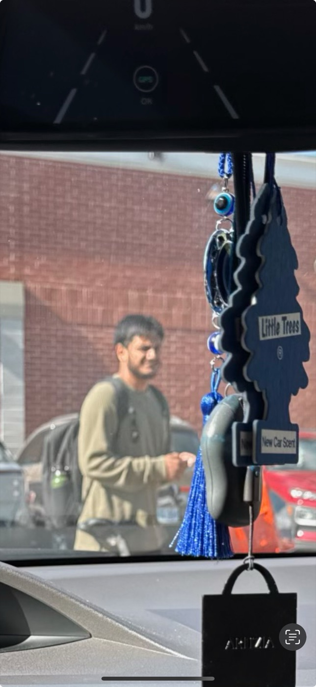
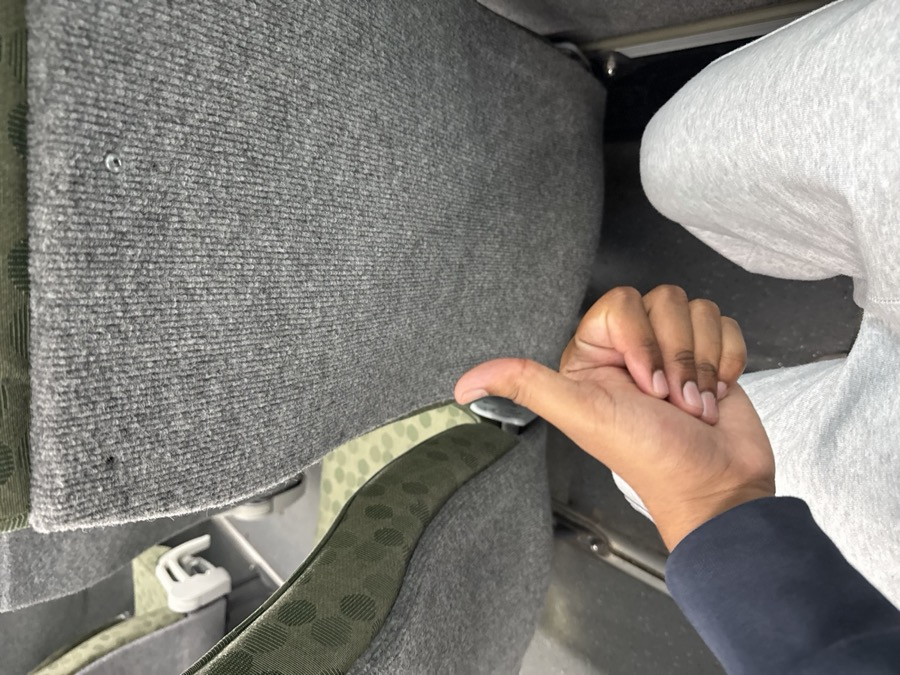
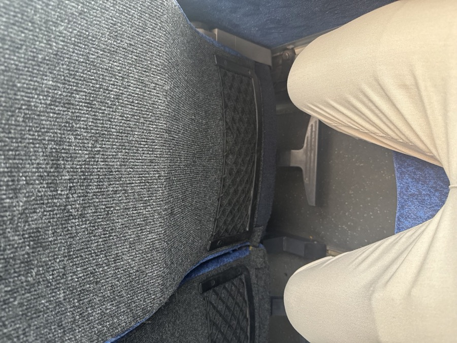

Tue, Oct 6
Plan
I started at three car-free days. That is more than the minimum, but staying home to study on days I don't need to be on campus is an easy way to count a car-free day, so I used it from the start.
Challenge 2
Swapping my Milton to Hamilton drive for the GO bus, a Bike Share bike and the occasional day at home.

By the end of the project I wanted to:
I started at three car-free days. That is more than the minimum, but staying home to study on days I don't need to be on campus is an easy way to count a car-free day, so I used it from the start.
I took the GO bus to and from campus instead of driving. My PRESTO history shows the trip back to the Oakville stop that evening (Figure C1).
Evidence: Figure C1Three car-free days. The bus takes longer than driving, but I can read or review on it, so the time isn't wasted the way it is behind the wheel. For one work shift I carpooled with a coworker going the same way. It isn't a car-free day, but it is one fewer car on the road.
Study-from-home day. The most sustainable trip is the one I don't take, and I had nothing that needed me on campus today.
On campus I used Hamilton Bike Share to get around in the evening, a 1.06 km ride of about six minutes (Figure C2).
Evidence: Figure C2Three car-free days again. I planned to add a fourth but couldn't fit it around my campus and work schedule, so I held steady instead of forcing it.
A note on my PRESTO history: on several trips during the project the fare machine on the GO bus wasn't working, so I rode without being able to tap my card. Those trips don't appear in Figure C1, which is why my PRESTO record has fewer bus days than my journal.

I took Bike Share across campus: 1.46 km in about 12.5 minutes at 1:48 PM. There is also a (blurry) photo of me with the bike (Figures C2 and C3).
Evidence: Figures C2, C3I drove to my midterm. In the past I have been late to a midterm because a GO bus didn't run on time, and I wasn't willing to risk that again on an exam day. I would rather be honest that I chose the car here than pretend I didn't.
I took the GO bus home from campus, tapping on at McMaster at 6:25 PM and arriving at the Oakville stop at 7:08 PM (Figure C1).
Evidence: Figure C1Two car-free days and one midterm drive, so I went down from three days instead of up. What stopped me wasn't motivation. It was reliability: when being late has a high cost, a car I control feels safer than a bus I don't.
I took the GO bus to campus, leaving the Oakville stop at 10:56 AM and arriving at McMaster at 11:36 AM (Figure C1). At 40 minutes, the trip is competitive with driving at that time of day.
Evidence: Figure C1I drove to my 4DM4 midterm, for the same reason as in week 3.
Two car-free days and one midterm drive. I didn't reach the four-day target. Looking back, the fix isn't more willpower. It's planning: taking an earlier bus with a full hour of buffer on exam days would remove the risk that pushed me back into the car.
Driving from Milton to McMaster and back is roughly 90 km. On bus days the only car leg is the drop-off at the GO stop, which happens on my sister's existing commute. Assuming my car uses about 8 L per 100 km, one campus day by GO bus instead of driving avoids about 7 L of gasoline. Burning one litre of gasoline produces about 2.3 kg of CO2 (Natural Resources Canada, n.d.), so that is about 16 kg of CO2 at the tailpipe per campus day. The bus has its own emissions, but they are shared across every passenger on board.
One bus commute avoids more than 50 times the CO2 that my entire four-week electricity challenge saved.




